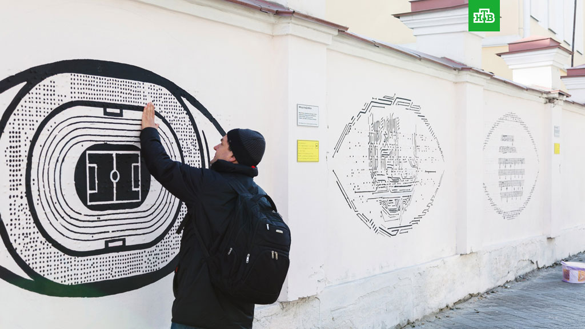

Посылка через пять лет будет идти 36 часов
Через пять лет "Почта России" планирует
доставлять посылки за 36 часов.
Для этого предприятие намерено значитель
но модернизировать свою инфраструктуру.
Гендиректор "Почты России" Николай
Подгузов в эфире телеканала "Россия 24"
рассказал, что в 2018 году стратегия предприятия
будет обновлена с учетом цифровизации
российской экономики.
И такие требования по срокам доставки могут быть
в ней заложены. Сейчас внутри России сроки
доставки снижены до 2-3 дней, а ранее речь шла о неделе.
Что касается интернет-торговли, то в ведущих
странах ее доля в общем объеме торговли
составляет от 10 до 15 процентов. У нас пока всего три
процента. Подгузов считает,
что мы вполне можем рассчитывать на увеличение
интернет-торговли через несколько лет
в 2-3 раза.
Сайт Кембриджского университета "упал" после публикации диссертации Хокинга
Сайт Кембриджского университета вышел из
строя из-за большого числа желающих
прочесть диссертацию физика Стивена Хокинга
после ее публикации,
сообщила газета Telegraph
Диссертация знаменитого физика
Стивена Хокинга "Свойства расширяющихся
вселенных",
которую ученый написал в 24 года, в понедельник
была впервые выложена в открытом доступе
на веб-сайте Кембриджского университета.
По сообщению университета,
менее чем за сутки более 60 тысяч человек
посетили сайт, чтобы прочитать или скачать
работу Хокинга.
"Это замечательно, что так много людей
захотели скачать мою диссертацию — надеюсь,
они не будут (ей – ред.) разочарованы", — сказал Хокинг.
По словам физика, он надеялся
"вдохновить людей", предоставив свою
университетскую работу в свободном доступе,
и призвал других ученых сделать то же самое.
Раньше диссертацию Хокинга можно было прочитать
только в библиотеке Кембриджа
или приобрести ее цифровую копию за 86 долларов.
На военной базе в США женщина открыла стрельбу
Стрельба произошла на военной базе США Форт Стюарт,
сообщается в заявлении базы на
официальной странице в Facebook.
"Женщина была взята под стражу военной полицией Форт Стюарт после того,
как сегодня открыла огонь на военном гарнизоне. В результате стрельбы никто не пострадал",
— говорится в заявлении.
"Женщина была взята под стражу военной
полицией Форт Стюарт после того,
как сегодня открыла огонь на военном
гарнизоне. В результате стрельбы ни
кто не пострадал",
— говорится в заявлении.
По словам представителя базы, пока
не известно, будут ли женщине предъявлены
обвинения.
Отмечается, что стрельба, предположи
тельно, "была вызвана бытовым конфлик
том" и не является
террористическим актом.
В Екатеринбурге появились граффити для незрячих людей

Визуальные символы и текст, написанный
шрифтом Брайля, можно найти на 8 марта,
36 – на задней стене детской филармонии.
Каждый из объектов рассказывает о незрячих
людях,
которые смогли добиться существенных успехов
в разных сферах жизни, - рассказала
пресс-секретарь фестиваля "Стенограффия"
Дарья Мельникова. Проект реализовали
НКО "Белая трость", авторская команда
"Стенограффии" и креативная команда
агентства
"Possible Moscow".
Губернатор Свердловской области презентует Екатеринбург в Южной Америке
По приглашению министра промышленности
и торговли России Дениса Мантурова
Евгений Куйвашев
отправился с рабочим визитом в
Латинскую Америку. В составе российской
делегации глава
Среднего Урала встретится с президентами
Мексики, Колумбии и Парагвая,
а также примет участие в бизнес-мероприятиях.
Цель рабочей поездки губернатора -
продвижение продукции промышленных
предприятий Свердловской области на рынки
латиноамериканских стран, а также
презентация российской заявки на право
проведения Всемирной выставки
«ЭКСПО-2025» в Екатеринбурге, -
сообщили в департаменте
информационной политики Свердловской
области.
Минпромторг России планирует увеличить
экспорт в Латинскую Америку, преимущещствен
но высокотехнологичных IT-товаров в сфе
ре энергетики, финансов, здравоохранения,
государственного и муниципального
управления.